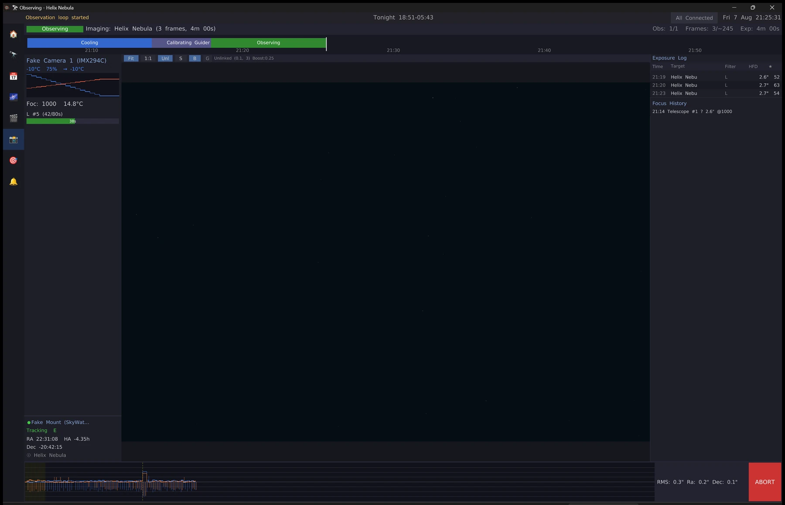

Automation
Point it at the sky and go to bed
It cools the camera, finds focus, calibrates the guider, slews and centres on a plate solve, dithers, handles the meridian flip, refocuses when the stars start to bloat, shoots flats at dawn, and parks. It drives one mount and every optical train on it.
Refocusing is triggered by a trend over the last 30 frames rather than one bad exposure, so a gust of wind or passing haze won't start a focus run. Focuser backlash is worked out from every successful autofocus, so you never have to measure it separately.
